Bundeszirkus.de sammelt automatisiert Plenarprotokolle aus dem Deutschen Bundestag um diese in Bezug auf Zwischenrufe zu analysieren.
Inspiriert wurde das Projekt von einem
Artikel der Süddeutschen Zeitung.

Zufälliger Zwischenruf.
zur Rede von
Welche Partei hat am meisten dazwischengerufen?
Welcher Politiker hat am meisten dazwischengerufen?
Welcher Partei wurde am meisten dazwischengerufen?
Welchem Politiker wurde am meisten dazwischengerufen?
Alle Zwischenrufe der 19. Wahlperiode des Deutschen Bundestags.
| Zwischenruf | Name Zwischenrufer | Partei Zwischenrufer | Name Sprecher | Fraktion/Rolle Sprecher |
|---|
Disclaimer
Alle Statistiken auf dieser Seite bezüglich von Zwischenrufen beziehen sich ausschließlich auf jene welche präzise - d.h. mit dem vollen Namen und der Partei des Zwischenrufers - protokolliert wurden. Falls im Protokoll lediglich "Zwischenrufe von der CDU/CSU" oder "Beifall von Seiten der AfD" beschrieben sind, so finden diese Einträge (noch) keinerlei statistische Beachtung auf dieser Seite. Alle Angaben dieser Seite sind ohne Gewähr. Dieses Projekt ist komplett Open-source: github.com/fbaierl/bundeszirkus-serverKorrektur- und Verbesserungsvorschläge sind jederzeit ausdrücklich erwünscht.
Quelle: bundestag.de/service/opendata
Bundeszirkus wurde entwickelt von
Florian Baierl